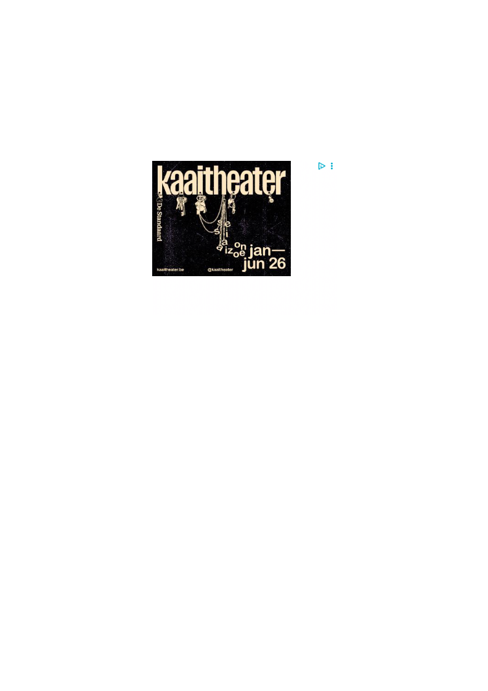

realistisch uitziende video kan maken over elk onderwerp. De grote vraag voor 2026 is:
willen we daarnaar blijven kijken?
willen we daarnaar blijven kijken?
Dat we zoveel AI-slop te zien krijgen de jongste weken, heeft niet alleen te maken met de
enorm toegenomen productie, maar ook met wat algoritmes ons aanbevelen. Met keuzes
die bedrijven als Meta, Google en Bytedance (Tiktok) voor ons maken, dus. Als je op
Youtube een nieuwe account aanmaakt, dan is 20 procent van de video’s die je worden
aangeboden van AI afkomstig.
enorm toegenomen productie, maar ook met wat algoritmes ons aanbevelen. Met keuzes
die bedrijven als Meta, Google en Bytedance (Tiktok) voor ons maken, dus. Als je op
Youtube een nieuwe account aanmaakt, dan is 20 procent van de video’s die je worden
aangeboden van AI afkomstig.
Mark Zuckerberg heeft het in oktober letterlijk gezegd: AI-gegenereerde inhoud betekent
een nieuw tijdperk in sociale media. Tijdens het eerste tijdperk deelden we ons eigen
leven op Facebook en Instagram, zei hij. Maar al snel bleek dat we ons liever vergapen aan
de levens van celebrity’s en influencers – tijdperk twee. En nu komt er een stortvloed van
AI-video’s aan.
een nieuw tijdperk in sociale media. Tijdens het eerste tijdperk deelden we ons eigen
leven op Facebook en Instagram, zei hij. Maar al snel bleek dat we ons liever vergapen aan
de levens van celebrity’s en influencers – tijdperk twee. En nu komt er een stortvloed van
AI-video’s aan.
Zuckerberg stelt het voor alsof die AI-inhoud er gewoon bovenop komt. Maar laten we wel
wezen: hoe meer AI in onze feed, hoe minder video’s we bekijken van professionele
makers en van onze eigen vrienden. Nochtans hadden sociale media echt wel een
bestaansreden, namelijk dat we geïnteresseerd zijn in wat er gebeurt met echte mensen.
Zijn we in 2026 dan zo veranderd?
wezen: hoe meer AI in onze feed, hoe minder video’s we bekijken van professionele
makers en van onze eigen vrienden. Nochtans hadden sociale media echt wel een
bestaansreden, namelijk dat we geïnteresseerd zijn in wat er gebeurt met echte mensen.
Zijn we in 2026 dan zo veranderd?
Volgens Zuckerberg wel. Hij denkt dat dit is wat we écht willen: boven op de algoritmes die
ons altijd precies tonen wat we graag zien, komen nu de videogenerators die daar zonder
enige beperking eindeloos meer van kunnen genereren. Nog meer kattenvideo’s,
onmogelijke stunts, spectaculaire taarten of gewelddadige pranks, of wat ook je ding mag
zijn (elders op het internet krijgen pornoliefhebbers nu video’s te zien die almaar meer
tonen van wat ze willen, ook als dat anatomisch totaal onmogelijk is).
ons altijd precies tonen wat we graag zien, komen nu de videogenerators die daar zonder
enige beperking eindeloos meer van kunnen genereren. Nog meer kattenvideo’s,
onmogelijke stunts, spectaculaire taarten of gewelddadige pranks, of wat ook je ding mag
zijn (elders op het internet krijgen pornoliefhebbers nu video’s te zien die almaar meer
tonen van wat ze willen, ook als dat anatomisch totaal onmogelijk is).
Die beelden zijn niet echt. Die mensen bestaan niet, die dingen zijn nooit gebeurd. Maar
Zuckerberg gaat ervan uit dat dat er niet toe doet: u wilt kattenvideo’s, u krijgt
Zuckerberg gaat ervan uit dat dat er niet toe doet: u wilt kattenvideo’s, u krijgt